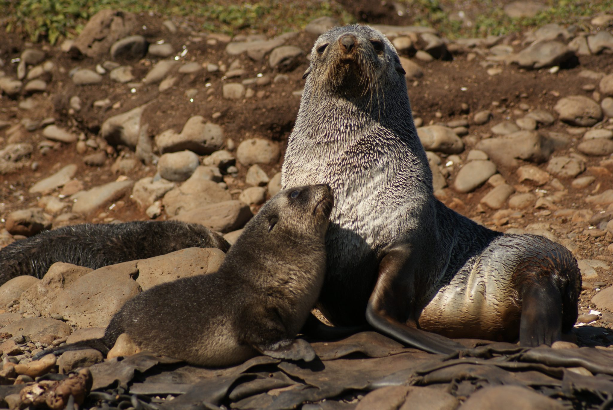

Threats: Getting tangled in fishing gear, illegal feeding and harassment, habitat loss, chemical contaminants, oil spills and drilling, boat collisions, disturbance, disease
Distribution: Canada, Mexico, United States
Conservation Status: Listed as a Species of Least Concern by the IUCN, protected under the Marine Mammal Protection Act
Sightings in the Pacific Northwest: Year-round, with pups sighted in summer
Northern Elephant Seal
Length: Up to 13 ft
Weight: Up to 4,500 lbs
Lifespan: 20 years
Diet: Squid, deepwater fish, sharks, skates, and rays
Threats: Getting accidentally caught by fishers, getting tangled in trash and lost or abandoned fishing gear
Distribution: Mexico, United States, Canada
Conservation Status: Listed as a Species of Least Concern by the IUCN, protected under he Marine Mammal Protection Act
Sightings in the Pacific Northwest: Possible sightings year-round, but peak sightings are spring through fall
Northern Fur Seal

Length: Up to 7 ft
Weight: Up to 600lbs
Lifespan: 18-27 years
Diet: Fish and squid
Threats: Entanglement in trash and lost or abandoned fishing gear, overfishing of their food sources, climate change, environmental contaminants, predators
Distribution: North Pacific Ocean and Bering Sea
Conservation Status: Listed as Vulnerable on the IUCN Red List and protected by the Marine Mammal Protection Act and Fur Seal Act
Sightings in the Pacific Northwest: Year round with peak sightings from spring through fall